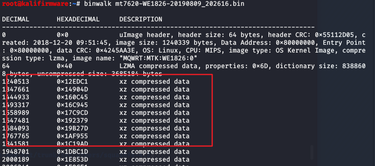
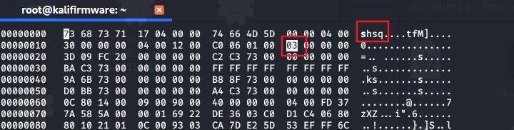
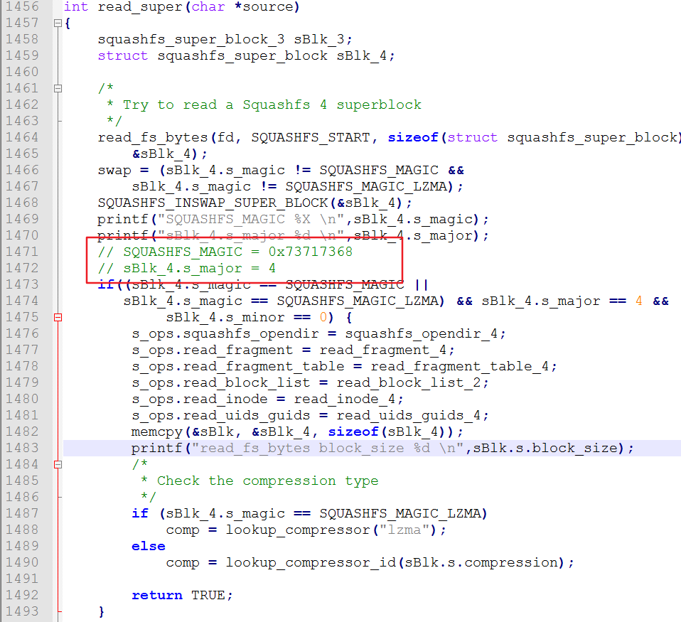
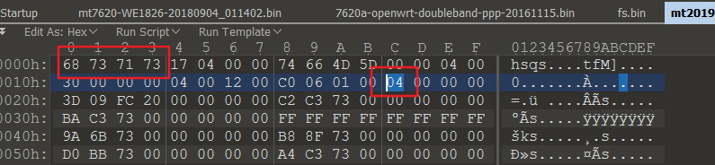
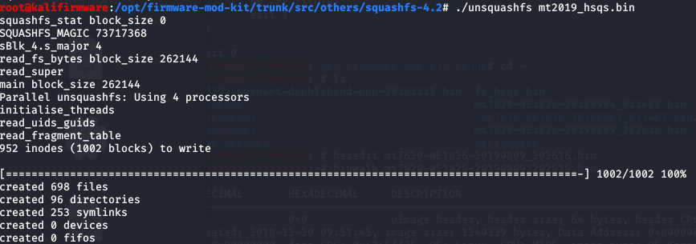

openwrt-uncompress
条评论Binwalk xxx.bin

可以看到只能识别到头部，下面xz compressed data 实际上是文件系统，被加密了。用binwalk解不出来。
这里用 firmware-mod-kit /trunk/src/others/squashfs-4.2/ unsquashfs 的工具解包。
具体做法如下：
1.dd 分离出下面文件系统部分，命令如下。
dd if=mt7620-WE1826-20190809_202616.bin of=mt2019.bin skip=0012ed53 bs=1，分离出的文件取名 mt2019
文件系统有个MagicValue值:shsq，所以skip位置要计算一下。另外这个文件的版本号 major = 3，位置如下图红框。

2.分析squashfs-4.2 文件下的源码 unsquashfs.c 文件，可以知道要解包的话，MagciValue要是0x73717368 也就是字符：hsqs，且版本号 major须是4。对应的源代码如下，read_super() 函数中的。

3.修改分离出的mt2019文件
改MagicValue为 68 73 71 73 ，修改版本号为 04，修改后取名mt2019_hsqs.bin

4.最后用 firmware-mod-kit /trunk/src/others/squashfs-4.2/ unsquashfs 工具解包，命令如下。
./unsquashfs mt2019_hsqs.bin 可解出。
